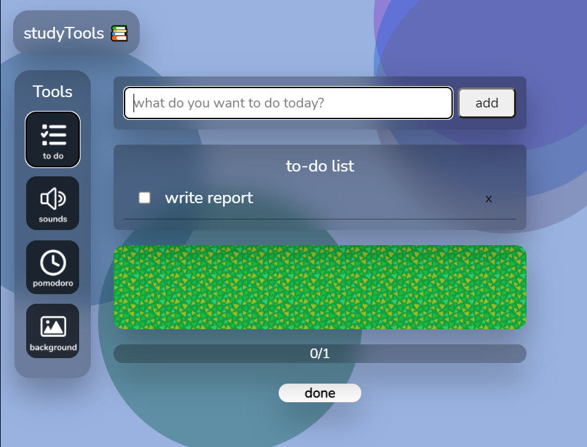

Add and clear tasks to earn tomatoes! Afterwards, click 'done' to see 🍅 falling


okay!
Welcome to studyTools! Here you will find useful tools that will help you stay productive.
Click on any of the icons on the left to try them :)
Add and clear tasks to earn tomatoes! Afterwards, click 'done' to see 🍅 falling
Click on any of the sounds to escape to a different soundscape!
Click on any of footer buttons to change your background!
The Pomodoro Technique is created by Francesco Cirillo for a more productive way to work and study. The technique uses a timer to break down work into intervals, traditionally 25 minutes in length, separated by short breaks. Each interval is known as a pomodoro, from the Italian word for 'tomato', after the tomato-shaped kitchen timer that Cirillo used as a university student.